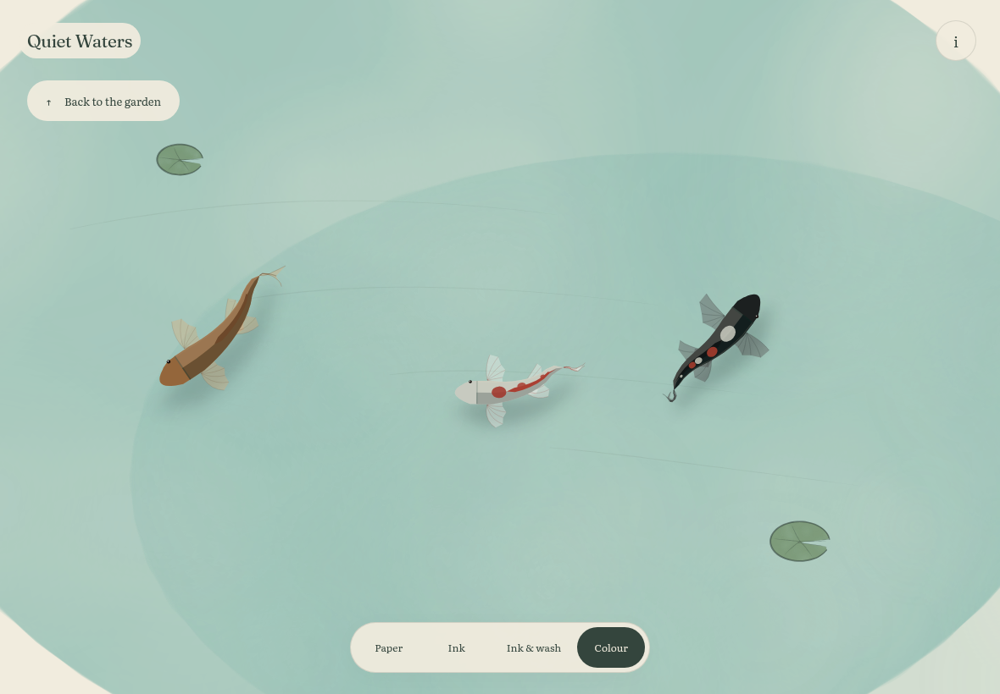
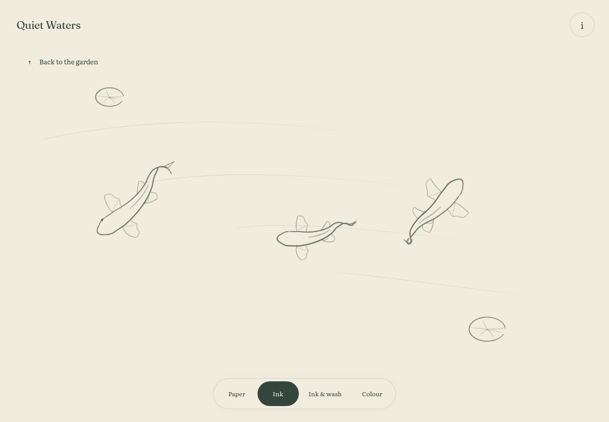

Colour uses the original native painter. Ink draws the same moving skeleton with pressure, dry fibres and pooled landings.
Colour · original painter

Ink · new brush interpretation

Actual browser captures, 1180 × 820, noon. Reduced motion holds one pose throughout the dial changes. The recording shows normal motion separately. No finished-frame filter, image retouching or skeleton replacement.